Contiv
Contiv
Rich Policy Framework
Set bandwidth and isolation policies in a multi-tenant environment.
Multi-Platforms
Docker, Kubernetes, OpenShift and more.
Multi-Infrastructure
VMs, containers, and bare metal.
Enterprise Grade
Rigorously tested for the cloud.
Networking Support
Layer 2, Layer 3, BGP, ACI
Open Source
Contiv is available through the Apache 2 License and our code is available on GitHub.
Learn and Try Now

Start by deploying a containerized application on Contiv
with our guided walkthrough and step-by-step tutorials